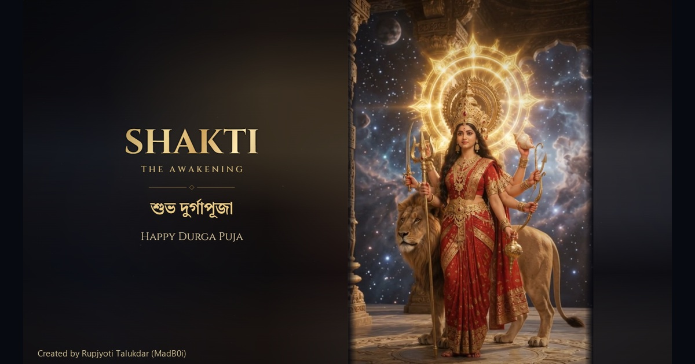

SHAKTI — The Awakening
Local review package. Public release blocked pending footage rights confirmation and owner approval.
Portrait Reel · 1080 × 1920 · 30 seconds
Desktop · 1440 × 810 · 30 seconds
8.5-second teaser
GitHub / LinkedIn cover

README preview

Social captions and required credits · Rights gate